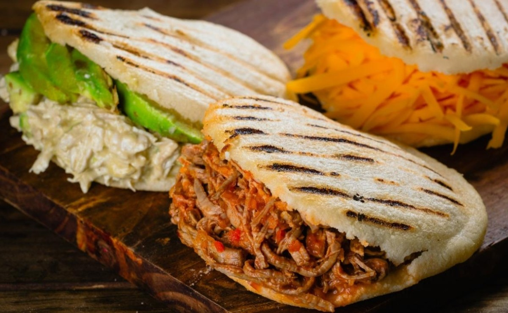

AREPAS
RETURN

INGREDIENTS
- 2 1/2 cups Lukewarm Water
- 1 teaspoons salt
- 2 cups Pre-Cooked White Cornmeal (such as P.A.N.)
- 1/4 cup Vegetable Oil (or as needed)
STYLES
- Perico
- Viuda
- white cheese
- shredded meat
- minced meat
- black beans with white cheese
- sausage with salsa
- telita cheese
- pabellon
- etc.